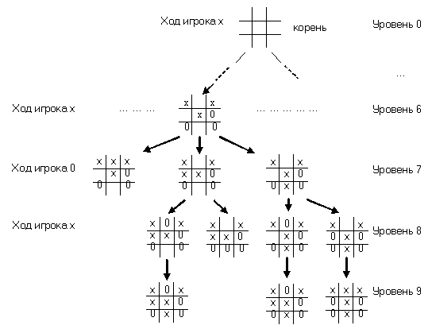
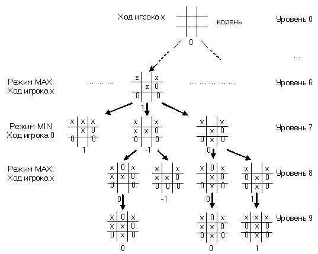
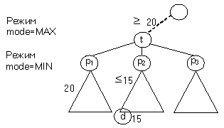
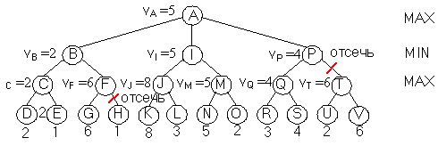
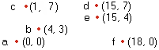
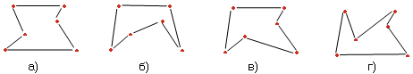
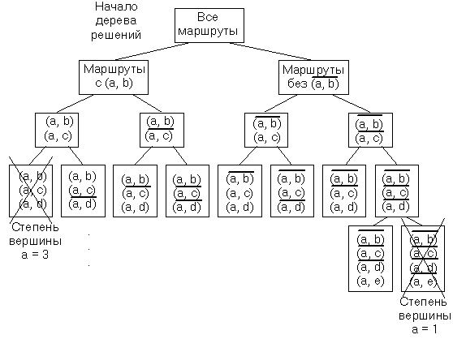

|
|
||||||||||
|
|
||||||||||
|
Исчерпывающий поиск (перебор) встречается в задачах с комбинаторными свойствами, исследующими в процессе решения перебор перестановок элементов, сочетаний или подмножеств данного множества. Как правило, в этих задачах выполняется поиск оптимального решения с минимальным или максимальным значением некоторого критерия. Иногда при решении оптимизационной задачи не удается применить методы динамического программирования или жадные алгоритмы. Поэтому приходится прибегнуть к полному перебору всех возможных решений. Метод полного перебора иначе называется поиском с возвратом. Как метод решения задач, исчерпывающий поиск (перебор) предполагает генерацию всех возможных элементов из области определения задачи, выбор тех из них, которые удовлетворяют ограничениям, накладываемым условиями задачи, последующий поиск нужного решения. Как правило, решение комбинаторных задач методом исчерпывающего поиска является исключительно неэффективным способом, имеющим экспоненциальную трудоемкость О(2n) или O(n!). Задачи, решаемые методом исчерпывающего поиска, называются NP - сложными задачами. Ни для одной из NP - сложных задач не известен алгоритм, решающий их за полиномиальное время. Но для многих NP - сложных задач известны альтернативные приближенные методы, позволяющие получить решение с меньшей трудоемкостью. К таким методам относятся метод жадного выбора и метод динамического программирования.
Наглядной иллюстрацией исчерпывающего поиска служат задача коммивояжера и задача о рюкзаке [8].
Задача коммивояжераЗадача коммивояжера звучит так: определить кратчайший путь по заданным n городам таким образом, чтобы каждый город посещался только один раз и конечным пунктом оказался город, с которого началось путешествие. Задачу можно смоделировать при помощи взвешенного графа, вершины которого представляют города, а веса ребер определяются расстояниями между городами. После этого задача может быть сформулирована как задача построения кратчайшего гамильтонова цикла для неориентированного графа. Гамильтонов цикл можно определить как последовательность n+1 вершин v1, v2, . . . , vn, v1, где первая вершина в последовательности совпадает с последней, а все остальные вершины различны. Задачу можно решить, составляя все возможные циклы путем генерации всех перестановок n - 1 вершин, вычисления длин соответствующих путей и выбора кратчайшего из них. Общее количество перестановок равно (n-1)!, что делает исчерпывающий поиск для больших n неприемлемым.
Задача о рюкзакеДано n предметов весом w1, w2, . . . ,wn и ценой v1, v2, . . . , vn, а также рюкзак, выдерживающий вес W. Необходимо найти подмножество предметов, которое можно разместить в рюкзаке, и которое имеет максимальную стоимость. Исчерпывающий перебор приводит к рассмотрению всех подмножеств из n предметов, вычислению общего веса каждого подмножества, выбору подмножества с допустимым весом, меньшим или равным W и выбору подмножества с максимальной стоимостью. Общее количество подмножеств, которые нужно перебрать, равно 2n, что также становится неприемлемым для больших n. Игровые задачиВ качестве примера поиска с возвратом рассмотрим задачу игры с участием двух игроков (крестики – нолики, шахматы. шашки) [1]. Игроки переменно делают ходы. Назовем игрока, проставляющего на игровой доске крестики, игроком x, а игрока, проставляющего на игровой доске нолики - игроком 0. Состояние игры отражается соответствующей позицией на игровой доске. Допустим, на доске есть конечное число позиций и в игре предусмотрены правила игры и "правило остановки", являющееся критерием ее завершения. С игрой можно ассоциировать дерево, называемое деревом игры. Каждый узел дерева игры представляет определенную, сложившуюся в процессе игры позицию. Начальная позиция игры соответствует корню дерева. Пусть позиции игры, в которой делает ход игрок x, соответствует узел дерева n. Тогда совокупности допустимых ходов из позиции x соответствуют потомки узла n и каждому потомку соответствует результирующая позиция на доске. Рассмотрим часть дерева игры:  Алгоритм игры "крестики нолики" в каждой позиции строит поддерево игры вплоть до листьев. Листья этого поддерева соответствуют таким позициям на доске, на которых невозможно сделать ход или потому, что один из игроков уже одержал победу, или потому, что все клетки заполнены и игра закончилась вничью. При возврате от листа до текущего узла (текущей позиции игры) каждому узлу дерева назначается цена. Сначала назначается цена листьям. Каждому листу назначается цена {– 1, 0 , +1} в зависимости от того, получил ли игрок х в этой позиции проигрыш (-1), ничью (0) или выигрыш (+1). Эти цены возвращаются вверх по дереву в соответствии со следующим правилом: если какой – либо узел соответствует позиции, где ход должен сделать игрок x, тогда этому узлу соответствует максимальная цена среди цен его потомков (режим MAX). При этом предполагается, что игрок сделает самый выгодный для себя ход. Если же узел соответствует ходу игрока 0, тогда соответствующая цена узла выбирается минимальной среди цен его потомков. При этом предполагается, что игрок 0 сделает самый выгодный для себя ход, который при благоприятном для него исходе приведет к проигрышу игрока x, или, по крайней мере, к ничьей (режим MIN). После исследования цен возможных ходов в текущей позиции игрок выбирает наиболее выгодный для себя ход с учетом режима (MAX или MIN).
 На уровне 8, где остается одна пустая клетка и ход - за игроком x, ценой всех разрешенных позиций является максимум уровня 9, то есть - 1. На уровне 7, где ход - за игроком 0 и остается два варианта решения, ценой узла является минимум уровня 8, то есть вариант, который имеет цену (–1). Одна позиция уровня 6 имеет цену 1, то есть максимум уровня 7, так как ход - за игроком x. Это значит, что на этом уровне игроку x нужно сделать оптимальный выбор и выигрыш последует немедленно. Если цена корня равна 1, что выигрышная стратегия находится в руках игрока x. Действительно, когда наступает очередь ходить, игрок x может выбрать ход, который приведет к позиции с ценой 1. Когда настанет черед игрока 0, ему не останется ничего другого, как выбрать ход, ведущий к той же позиции с ценой 1, что означает для него проигрыш. Если же цена корня 0, как в случае игры "крестики – нолики", тогда ни один из игроков не обладает выигрышной стратегией и может рассчитывать лишь на ничью, если будет играть без ошибок. Если цена корня равна (–1), то выигрышная стратегия находится в руках игрока 0.
Функция выигрышаИдею дерева игры можно обобщить, если листьям в качестве цены присваиваются любые числа, играющие роль цены игры. В качестве примера можно привести игру в шахматы. В этой игре дерево игры настолько огромно, что любые попытки оценить его методом "снизу - вверх" обречены на неудачу. Любые шахматные программы строят для каждой промежуточной позиции на шахматной доске дерево игры. Корнем дерева является текущая позиция, дерево распространяется на несколько уровней вниз. Точное количество уровней зависит от быстродействия компьютера. Когда большинство листьев поддерева проявляют неоднозначность, то есть не ведут ни к выигрышу, ни к ничьей, ни к проигрышу, программа использует определенную функцию выигрыша на доске, которая определяет вероятность выигрыша компьютера в этой позиции. На вероятность влияет наличие у одной из сторон материального перевеса, прочность защиты королей и другие факторы, специфичные для игры. Используя такую функцию выигрыша, компьютер может оценить вероятность выигрыша после выполнения им каждого из возможных очередных ходов, и выбрать ход с максимальным выигрышем.
Реализация поиска с возвратом для дерева игрыПусть заданы правила игры, то есть допустимые ходы и правила завершения игры. Нужно построить дерево игры и оценить стоимость его кореня. Можно построить дерево обычным способом, а затем совершить обход его узлов в обратном порядке. Объем памяти для хранения такого дерева может оказаться столь велик, что будет невозможно реализовать задачу. Но если принять определенные меры, можно обойтись хранением в памяти в данный момент времени лишь одного пути от корня к тому или иному узлу. Сделаем несколько допущений:
Алгоритм поиска с возвратом в дереве игрыexhaustive_ search (t, mode)
Можно реализовать поиск с возвратом итеративным способом, если функция поиска использует стек позиций, соответствующих последовательности вызов функции exhaustive_ search.
Альфа – бета отсечение [1]Существенно сократить дерево игры может следующий момент. В цикле for (строка 8) можно проигнорировать часть сыновей очередного узла t.  Допустим, мы рассматриваем узел t и уже определили, что цена первого сына p1 равна 20. Поскольку узел t находится в режиме MAX, то цена узла t не меньше 20. Допустим, продолжая поиск, мы определили, что у сына есть p2 есть потомок d с выигрышем 15. Так как узел p2 находится в режиме MIN, то значение p2 не может быть больше 15. Таким образом, каково бы ни было значение p2, оно не может быть выбрано узлом t, так как его цена уже меньше цены сына p1 (20). То есть, p2 не влияет на цену узла t и цену любого предка узла t. Ввиду этого можно проигнорировать рассмотрение остальных потомков узла p2. Общее правило отбрасывания или "отсечения" узлов связано с понятием ориентировочных и конечных значений выигрыша для узлов. Конечное значение – это то, которое называется просто значением (выигрышем) в результате полного обхода поддеревьев узла. Ориентировочное значение – верхний предел значений выигрыша в узле в режиме MIN или нижний предел в режиме MAX (20). Правила вычисления конечных и ориентировочных значений следующие:
Рассмотрим дерево игры:  Полагая, что значения листьев соответствуют значениям на рисунке, необходимо вычислить значение корня. Начинаем обход дерева в обратном порядке. снизу - вверх. Достигнув узла D, в соответствии с правилом 2 назначим узлу C ориентировочное значение 2, которое является конечным значением узла D. Просматриваем узел E и возвращаемся в узел C, а затем переходим в узел B. В соответствии с правилом 1 конечное значение узла C равно 2, а ориентировочное значение узла B - 2. Далее обход дерева продолжается вниз к узлу G, а затем обратно - в узел F. Ориентировочное значение узла F равно 6. В соответствии с правилом 3 можно отсечь узел H, поскольку ориентировочное значение узла F уменьшиться не может и оно уже больше значения узла B, которое не может увеличиться. Далее в процессе обратного обхода для узла A назначим ориентировочное значение 2 и переходим к узлу K. Для узла J назначается ориентировочное значение 8. Значение узла L не влияет на значение узла J. Для узла I назначается ориентировочное значение 8. При переходе к узлу N, узлу M назначается ориентировочное значение 5. Необходимо выполнить просмотр узла O, поскольку ориентировочное значение узла M (5) меньше ориентировочного значения узла I. Далее просматриваются ориентировочные значения узлов I и A. При переходе к узлу R выполняется просмотр узлов Rи S и узлу P назначается ориентировочное значение 4. Просмотр узла T и всех его потомков не выполняется, поскольку это не может понизить значение узла P, которое уже и так достаточно мало, чтобы повлиять на значение узла A.
Метод ветвей и границДерево решений используют не только игровые задачи. Многие задачи, связанные поиском минимальной или максимальной конфигурации того или иного типа, решаются с помощью поиска с возвратом, применяемого к дереву возможностей. Узлы такого дерева рассматриваются как совокупности конфигураций, а каждый потомок узла – некоторое подмножество конфигураций. Каждый лист – отдельная конфигурация. Каждую такую конфигурацию можно оценить и выяснить, не является ли она наилучшей среди уже найденных решений. Если просмотр организован рационально, каждый из потомков некоторого узла представляет намного меньше конфигураций, чем этот узел. Поэтому, чтобы достичь листьев не придется добираться слишком глубоко. Рассмотрим задачу коммивояжера, которая сводится к поиску в неориентированном графе минимального гамильтонова цикла. Пусть дан неориентированный граф, вершины которого заданы координатами на декартовой плоскости (города):

Возможны следующие варианты гамильтонова цикла в этом графе:

Длина гамильтонова цикла в случаях следующая: а) l = 50.00, б) l = 49.73, в) l = 48.39, г) l = 49.78. То есть кратчайшим гамильтоновым циклом является вариант в) и, следовательно, является решением задачи коммивояжера. Задача решается несколькими методами, в том числе и с помощью жадного выбора. Но здесь мы рассмотрим поиск методом систематического просмотра маршрутов. Это можно было бы сделать, рассмотрев все перестановки узлов и, определив маршрут, который проходит узлы в соответствующей последовательности, учитывая наилучший из найденных до сих пор маршрутов. Время на реализацию такого подхода на графе с n узлами равно O(n!). Рассмотрим иной подход, который в сочетании с методом ветвей и границ в среднем получает решение гораздо быстрее, чем метод "перебора" всех перестановок. Построение дерева начинается с корня, представляющего все маршруты. Маршруты соответствуют конфигурациям. Каждый узел делит группу конфигураций на группу с ребром и группу без ребра.  Будем проходить ребра дерева в лексикографическом порядке: (a, b), (a, c), ... ,(a, f), (b, c), ... , (b, f), (c, d) и т. д. Не у каждого узла в этом дерева есть 2 сына. Некоторых сыновей можно удалить, поскольку выбранные ребра не могут входить в маршрут. Не существует маршрутов с ребрами (a, b), (a, c), (a, d), т. к. вершина a имела бы степень 3, а результат не был бы маршрутом. Точно также, спускаясь по дереву можно удалить некоторые узлы, поскольку какой – то город будет иметь степень меньше 2. Например, нет ни одного узла для маршрутов без (a, b), (a, c), (a, d) и (a, f). |
||||||||||
|
|